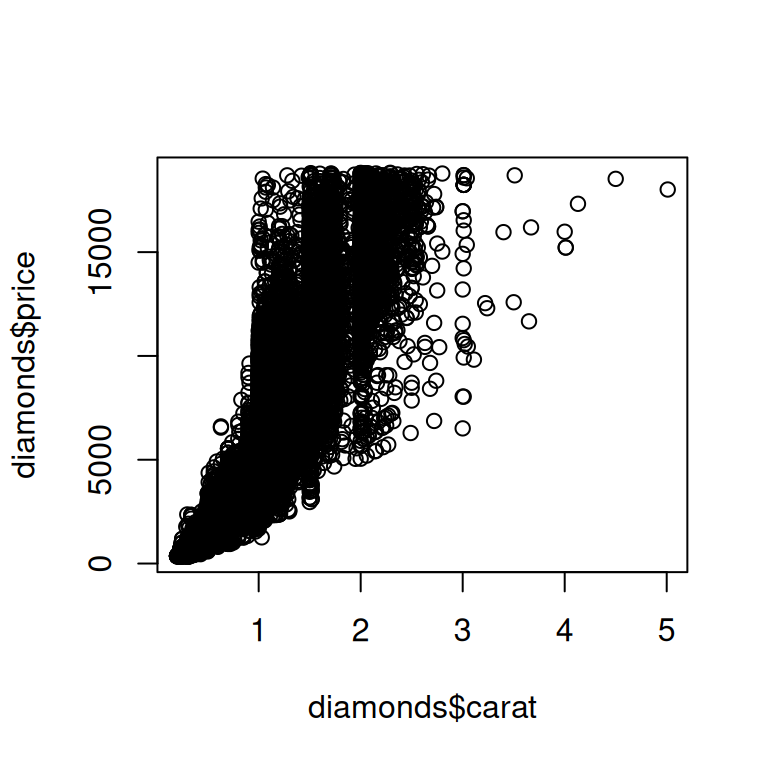

27 Una guía para R base
27.1 Introducción
Para finalizar la sección de programación, le daremos un recorrido rápido por las funciones básicas de R más importantes que no trataremos en este libro. Estas herramientas son particularmente útiles a medida que programa más y lo ayudarán a leer el código que encontrará en la naturaleza.
Este es un buen lugar para recordarle que tidyverse no es la única forma de resolver problemas de ciencia de datos. Enseñamos el tidyverse en este libro porque los paquetes de tidyverse comparten una filosofía de diseño común, aumentando la consistencia entre las funciones y haciendo que cada nueva función o paquete sea un poco más fácil de aprender y usar. No es posible usar tidyverse sin usar base R, por lo que en realidad ya te hemos enseñado un montón de funciones base R: desde library() para cargar paquetes, hasta sum() y mean () para resúmenes numéricos, hasta los tipos de datos factor, fecha y POSIXct y, por supuesto, todos los operadores básicos como +, -, /, *, |, &, y !. En lo que no nos hemos centrado hasta ahora son los flujos de trabajo básicos de R, por lo que destacaremos algunos de ellos en este capítulo.
Después de leer este libro, aprenderá otros enfoques para los mismos problemas usando base R, data.table y otros paquetes. Sin duda, encontrará estos otros enfoques cuando comience a leer el código R escrito por otros, especialmente si está usando StackOverflow. Está 100 % bien escribir código que use una combinación de enfoques, ¡y no dejes que nadie te diga lo contrario!
En este capítulo, nos centraremos en cuatro grandes temas: creación de subconjuntos con [, creación de subconjuntos con [[ y $, la familia de funciones apply y bucles for. Para terminar, discutiremos brevemente dos funciones de gráficas esenciales.
27.1.1 Requisitos previos
Este paquete se centra en la base R, por lo que no tiene requisitos previos reales, pero cargaremos el tidyverse para explicar algunas de las diferencias.
27.2 Selección de varios elementos con [
[ se usa para extraer subcomponentes de vectores y marcos de datos, y se llama x[i] o x[i, j]. En esta sección, le presentaremos el poder de [, primero mostrándole cómo puede usarlo con vectores, luego cómo los mismos principios se extienden de manera sencilla a estructuras bidimensionales (2d) como marcos de datos. Luego, lo ayudaremos a consolidar ese conocimiento al mostrar cómo varios verbos dplyr son casos especiales de [.
27.2.1 Subconjunto de vectores
Hay cinco tipos principales de elementos con los que puede crear subconjuntos de un vector, es decir, que pueden ser la i en x[i]:
-
Un vector de enteros positivos. Subdividir con enteros positivos mantiene los elementos en esas posiciones:
Al repetir una posición, en realidad puede hacer una salida más larga que la entrada, lo que hace que el término “subconjunto” sea un poco inapropiado.
x[c(1, 1, 5, 5, 5, 2)] #> [1] "one" "one" "five" "five" "five" "two" -
Un vector de enteros negativos. Los valores negativos colocan los elementos en las posiciones especificadas:
x[c(-1, -3, -5)] #> [1] "two" "four" -
Un vector lógico. La creación de subconjuntos con un vector lógico mantiene todos los valores correspondientes a un valor
TRUE. Esto suele ser útil junto con las funciones de comparación.A diferencia de
filter(), los índicesNAse incluirán en la salida comoNAs. -
Un vector de caracteres. Si tiene un vector con nombre, puede crear subconjuntos con un vector de caracteres:
Al igual que con la creación de subconjuntos con números enteros positivos, puede usar un vector de caracteres para duplicar entradas individuales.
Nada. El último tipo de subconjunto es nada,
x[], que devuelve laxcompleta. Esto no es útil para crear subconjuntos de vectores, pero como veremos en breve, es útil para crear subconjuntos de estructuras 2d como tibbles.
27.2.2 Subconjuntos de data frames
Hay bastantes formas diferentes1 de usar [ con un marco de datos, pero la forma más importante es seleccionar filas y columnas de forma independiente con df[rows, cols]. Aquí rows y cols son vectores como se describe arriba. Por ejemplo, df[rows, ] y df[, cols] seleccionan solo filas o solo columnas, utilizando el subconjunto vacío para conservar la otra dimensión.
Aquí hay un par de ejemplos:
df <- tibble(
x = 1:3,
y = c("a", "e", "f"),
z = runif(3)
)
# Selecciona la primera fila y la segunda columna
df[1, 2]
#> # A tibble: 1 × 1
#> y
#> <chr>
#> 1 a
# Selecciona todas las filas y las columnas x e y
df[, c("x" , "y")]
#> # A tibble: 3 × 2
#> x y
#> <int> <chr>
#> 1 1 a
#> 2 2 e
#> 3 3 f
# Selecciona las filas donde `x` es mayor que 1 y todas las columnas
df[df$x > 1, ]
#> # A tibble: 2 × 3
#> x y z
#> <int> <chr> <dbl>
#> 1 2 e 0.834
#> 2 3 f 0.601Volveremos a $ en breve, pero debería poder adivinar lo que hace df$x a partir del contexto: extrae la variable x de df. Necesitamos usarlo aquí porque [ no usa una evaluación ordenada, por lo que debe ser explícito sobre la fuente de la variable x.
Hay una diferencia importante entre tibbles y marcos de datos cuando se trata de [. En este libro, hemos usado principalmente tibbles, que son marcos de datos, pero ajustan algunos comportamientos para hacer su vida un poco más fácil. En la mayoría de los lugares, puede usar “tibble” y “marco de datos” indistintamente, por lo que cuando queramos llamar la atención sobre el marco de datos integrado de R, escribiremos data.frame. Si df es un data.frame, df[, cols] devolverá un vector si col selecciona una sola columna y un marco de datos si selecciona más de una columna. Si df es un tibble, entonces [ siempre devolverá un tibble.
df1 <- data.frame(x = 1:3)
df1[, "x"]
#> [1] 1 2 3
df2 <- tibble(x = 1:3)
df2[, "x"]
#> # A tibble: 3 × 1
#> x
#> <int>
#> 1 1
#> 2 2
#> 3 3Una forma de evitar esta ambigüedad con data.frames es especificar explícitamente drop = FALSE:
df1[, "x" , drop = FALSE]
#> x
#> 1 1
#> 2 2
#> 3 327.2.3 equivalentes de dplyr
Varios verbos dplyr son casos especiales de [:
-
filter()es equivalente a subdividir las filas con un vector lógico, teniendo cuidado de excluir los valores faltantes:Otra técnica común en la naturaleza es usar
which()por su efecto secundario de descartar valores faltantes:df[which(df$x > 1), ]. -
arrange()es equivalente a dividir las filas en subconjuntos con un vector entero, generalmente creado conorder():Puede usar
order(decreasing = TRUE)para ordenar todas las columnas en orden descendente o-rank(col)para ordenar las columnas en orden decreciente individualmente. -
Tanto
select()comorelocate()son similares a subdividir las columnas con un vector de caracteres:
Base R también proporciona una función que combina las características de filter() y select()2 llamada subset():
Esta función fue la inspiración para gran parte de la sintaxis de dplyr.
27.2.4 Ejercicios
-
Crear funciones que tomen un vector como entrada y retorno:
- Los elementos en posiciones pares.
- Todos los elementos excepto el último valor.
- Solo valores pares (y sin valores faltantes).
¿Por qué
x[-which(x > 0)]no es lo mismo quex[x <= 0]? Lea la documentación dewhich()y haga algunos experimentos para averiguarlo..
27.3 Seleccionando un solo elemento con $ y [[
[, que selecciona muchos elementos, se combina con [[ y $, que extraen un solo elemento. En esta sección, le mostraremos cómo usar [[ y $ para extraer columnas de los marcos de datos, analizaremos un par de diferencias más entre data.frames y tibbles, y enfatizaremos algunas diferencias importantes entre [ y [[ cuando se usa con listas.
27.3.1 Data frames
[[ y $ se puede usar para extraer columnas de un marco de datos. [[ puede acceder por posición o por nombre, y $ está especializado para acceder por nombre:
También se pueden usar para crear nuevas columnas, el equivalente base R de mutate():
tb$z <- tb$x + tb$y
tb
#> # A tibble: 4 × 3
#> x y z
#> <int> <dbl> <dbl>
#> 1 1 10 11
#> 2 2 4 6
#> 3 3 1 4
#> 4 4 21 25Hay varios otros enfoques básicos de R para crear nuevas columnas, incluidos transform(), with() y within(). Hadley reunió algunos ejemplos en https://gist.github.com/hadley/1986a273e384fb2d4d752c18ed71bedf.
Usar $ directamente es conveniente cuando se realizan resúmenes rápidos. Por ejemplo, si solo desea encontrar el tamaño del diamante más grande o los posibles valores de cut, no es necesario usar summarize():
dplyr también proporciona un equivalente a [[/$ que no mencionamos en Capítulo 3: pull(). pull() toma un nombre de variable o una posición de variable y devuelve solo esa columna. Eso significa que podríamos reescribir el código anterior para usar pipe:
27.3.2 Tibbles
Hay un par de diferencias importantes entre tibbles y data.frames base cuando se trata de $. Los marcos de datos coinciden con el prefijo de cualquier nombre de variable (la llamada coincidencia parcial) y no se quejan si una columna no existe:
df <- data.frame(x1 = 1)
df$x
#> [1] 1
df$z
#> NULLLos Tibbles son más estrictos: solo coinciden exactamente con los nombres de las variables y generarán una advertencia si la columna a la que intenta acceder no existe:
tb <- tibble(x1 = 1)
tb$x
#> Warning: Unknown or uninitialised column: `x`.
#> NULL
tb$z
#> Warning: Unknown or uninitialised column: `z`.
#> NULLPor eso a veces bromeamos diciendo que los tibbles son holgazanes y hoscos: hacen menos y se quejan más.
27.3.3 Listas
[[ y $ también son muy importantes para trabajar con listas, y es importante comprender en qué se diferencian de [. Ilustremos las diferencias con una lista llamada l:
-
[extrae una sublista. No importa cuántos elementos extraiga, el resultado siempre será una lista.Al igual que con los vectores, puede crear subconjuntos con un vector lógico, entero o de caracteres.
-
[[y$extrae un solo componente de una lista. Eliminan un nivel de jerarquía de la lista.
La diferencia entre [ y [[ es particularmente importante para las listas porque [[ profundiza en la lista mientras que [ devuelve una nueva lista más pequeña. Para ayudarlo a recordar la diferencia, eche un vistazo al pimentero inusual que se muestra en Figura 27.1. Si este pimentero es su lista pepper, entonces pepper[1] es un pimentero que contiene un solo paquete de pimienta. pepper[2] se vería igual, pero contendría el segundo paquete. pepper[1:2] sería un pimentero que contiene dos paquetes de pimienta. pepper[[1]] extraería el propio paquete de pimienta.
pepper[1] (Derecha) pepper[[1]]
Este mismo principio se aplica cuando usa 1d [ con un marco de datos: df["x"] devuelve un marco de datos de una columna y df[["x"]] devuelve un vector.
27.3.4 Ejercicios
¿Qué sucede cuando usas
[[con un entero positivo que es más grande que la longitud del vector? ¿Qué sucede cuando creas un subconjunto con un nombre que no existe?¿Qué sería
pepper[[1]][1]? ¿Qué pasa conpepper[[1]][[1]]?
27.4 Familia apply
En Capítulo 26, aprendió técnicas tidyverse para la iteración como dplyr::across() y la familia de funciones map. En esta sección, aprenderá sobre sus equivalentes básicos, la familia apply. En este contexto, aplicar y mapear son sinónimos porque otra forma de decir “mapear una función sobre cada elemento de un vector” es “aplicar una función sobre cada elemento de un vector”. Aquí le daremos una descripción general rápida de esta familia para que pueda reconocerlos en la naturaleza.
El miembro más importante de esta familia es lapply(), que es muy similar a purrr::map()3. De hecho, debido a que no hemos usado ninguna de las características más avanzadas de map(), puede reemplazar cada llamada map() en Capítulo 26 con lapply().
No hay una base R equivalente exacta a across() pero puedes acercarte usando [ con lapply(). Esto funciona porque, bajo el capó, los marcos de datos son listas de columnas, por lo que llamar a lapply() en un marco de datos aplica la función a cada columna.
df <- tibble(a = 1, b = 2, c = "a", d = "b", e = 4)
# Primero encuentra columnas numéricas
num_cols <- sapply(df, is.numeric)
num_cols
#> a b c d e
#> TRUE TRUE FALSE FALSE TRUE
# Luego transforme cada columna con lapply() y luego reemplace los valores originales
df[, num_cols] <- lapply(df[, num_cols, drop = FALSE], \(x) x * 2)
df
#> # A tibble: 1 × 5
#> a b c d e
#> <dbl> <dbl> <chr> <chr> <dbl>
#> 1 2 4 a b 8El código anterior usa una nueva función, sapply(). Es similar a lapply() pero siempre intenta simplificar el resultado, de ahí la s en su nombre, produciendo aquí un vector lógico en lugar de una lista. No recomendamos usarlo para programar, porque la simplificación puede fallar y generar un tipo inesperado, pero generalmente está bien para uso interactivo. purrr tiene una función similar llamada map_vec() que no mencionamos en Capítulo 26.
Base R proporciona una versión más estricta de sapply() llamada vapply(), abreviatura de vector apply. Toma un argumento adicional que especifica el tipo esperado, lo que garantiza que la simplificación ocurra de la misma manera, independientemente de la entrada. Por ejemplo, podríamos reemplazar la llamada sapply() anterior con vapply() donde especificamos que esperamos que is.numeric() devuelva un vector lógico de longitud 1:
La distinción entre sapply() y vapply() es realmente importante cuando están dentro de una función (porque hace una gran diferencia en la solidez de la función ante entradas inusuales), pero generalmente no importa en el análisis de datos.
Otro miembro importante de la familia apply es tapply(), que calcula un solo resumen agrupado:
diamonds |>
group_by(cut) |>
summarize(price = mean(price))
#> # A tibble: 5 × 2
#> cut price
#> <ord> <dbl>
#> 1 Fair 4359.
#> 2 Good 3929.
#> 3 Very Good 3982.
#> 4 Premium 4584.
#> 5 Ideal 3458.
tapply(diamonds$price, diamonds$cut, mean)
#> Fair Good Very Good Premium Ideal
#> 4358.758 3928.864 3981.760 4584.258 3457.542Desafortunadamente, tapply() devuelve sus resultados en un vector con nombre que requiere algo de gimnasia si desea recopilar múltiples resúmenes y agrupar variables en un marco de datos (ciertamente es posible no hacer esto y solo trabajar con vectores flotantes libres, pero en nuestro experiencia que sólo retrasa el trabajo). Si desea ver cómo podría usar tapply() u otras técnicas básicas para realizar otros resúmenes agrupados, Hadley ha recopilado algunas técnicas en un gist .
El último miembro de la familia apply es el titular apply(), que funciona con matrices y arreglos. En particular, tenga cuidado con apply(df, 2, something), que es una forma lenta y potencialmente peligrosa de hacer lapply(df, something). Esto rara vez surge en la ciencia de datos porque generalmente trabajamos con marcos de datos y no con matrices.
27.5 Bucles for
Los bucles for son el bloque de construcción fundamental de la iteración que tanto la familia apply como la función map utilizan bajo el capó. Los bucles for son herramientas poderosas y generales que es importante aprender a medida que se convierte en un programador de R más experimentado. La estructura básica de un bucle for se ve así:
for (element in vector) {
# hacer algo con el elemento
}El uso más directo de los bucles for es lograr el mismo efecto que walk(): llamar a alguna función con un efecto secundario en cada elemento de una lista. Por ejemplo, en Sección 26.4.1 en lugar de caminar:
paths |> walk(append_file)Podríamos haber usado un bucle for:
for (path in paths) {
append_file(path)
}Las cosas se vuelven un poco más complicadas si desea guardar la salida del bucle for, por ejemplo, leyendo todos los archivos de Excel en un directorio como hicimos en Capítulo 26:
paths <- dir("data/gapminder", pattern = "\\.xlsx$", full.names = TRUE)
files <- map(paths, readxl::read_excel)Hay algunas técnicas diferentes que puede usar, pero le recomendamos que sea explícito sobre cómo se verá la salida por adelantado. En este caso, vamos a querer una lista de la misma longitud que paths, que podemos crear con vector():
Luego, en lugar de iterar sobre los elementos de paths, iteramos sobre sus índices, usando seq_along() para generar un índice para cada elemento de las rutas:
seq_along(paths)
#> [1] 1 2 3 4 5 6 7 8 9 10 11 12Usar los índices es importante porque nos permite vincular cada posición en la entrada con la posición correspondiente en la salida:
for (i in seq_along(paths)) {
files[[i]] <- readxl::read_excel(paths[[i]])
}Para combinar la lista de tibbles en un solo tibble puedes usar do.call() + rbind():
do.call(rbind, files)
#> # A tibble: 1,704 × 5
#> country continent lifeExp pop gdpPercap
#> <chr> <chr> <dbl> <dbl> <dbl>
#> 1 Afghanistan Asia 28.8 8425333 779.
#> 2 Albania Europe 55.2 1282697 1601.
#> 3 Algeria Africa 43.1 9279525 2449.
#> 4 Angola Africa 30.0 4232095 3521.
#> 5 Argentina Americas 62.5 17876956 5911.
#> 6 Australia Oceania 69.1 8691212 10040.
#> # ℹ 1,698 more rowsEn lugar de hacer una lista y guardar los resultados a medida que avanzamos, un enfoque más simple es construir el marco de datos pieza por pieza:
out <- NULL
for (path in paths) {
out <- rbind(out, readxl::read_excel(path))
}Recomendamos evitar este patrón porque puede volverse muy lento cuando el vector es muy largo. Esta es la fuente del bulo persistente de que los bucles for son lentos: no lo son, pero el crecimiento iterativo de un vector sí lo es.
27.6 Gráficas
Muchos usuarios de R que no usan tidyverse igualmente prefieren ggplot2 para gráficar debido a características útiles como valores predeterminados sensibles, leyendas automáticas y una apariencia moderna. Sin embargo, las funciones gráficas base R aún pueden ser útiles porque son muy concisas; se necesita escribir muy poco para hacer un gráfico exploratorio básico.
Hay dos tipos principales de gráficos base que verá en la naturaleza: diagramas de dispersión e histogramas, producidos con plot() y hist() respectivamente. Aquí hay un ejemplo rápido del conjunto de datos de diamantes:

Tenga en cuenta que las funciones de trazado base funcionan con vectores, por lo que debe extraer columnas del marco de datos utilizando $ o alguna otra técnica.
27.7 Resumen
En este capítulo, le mostramos una selección de funciones básicas de R útiles para la creación de subconjuntos y la iteración. En comparación con los enfoques discutidos en otras partes del libro, estas funciones tienden a tener más un sabor de “vector” que un sabor de “marco de datos” porque las funciones base de R tienden a tomar vectores individuales, en lugar de un marco de datos y alguna especificación de columna. Esto a menudo hace que la vida sea más fácil para la programación y, por lo tanto, se vuelve más importante a medida que escribe más funciones y comienza a escribir sus propios paquetes.
Este capítulo concluye la sección de programación del libro. Ha tenido un comienzo sólido en su viaje para convertirse no solo en un científico de datos que usa R, sino en un científico de datos que puede programar en R. Esperamos que estos capítulos hayan despertado su interés en la programación y que desee aprender más fuera de este libro.
Lea https://adv-r.hadley.nz/subsetting.html#subset-multiple para ver cómo también puede crear subconjuntos de un marco de datos como si fuera un objeto 1d y cómo puede crear subconjuntos con una matriz.↩︎
Pero no maneja marcos de datos agrupados de manera diferente y no admite funciones auxiliares de selección como
starts_with().↩︎Simplemente carece de características convenientes como barras de progreso e informar qué elemento causó el problema si hay un error.↩︎